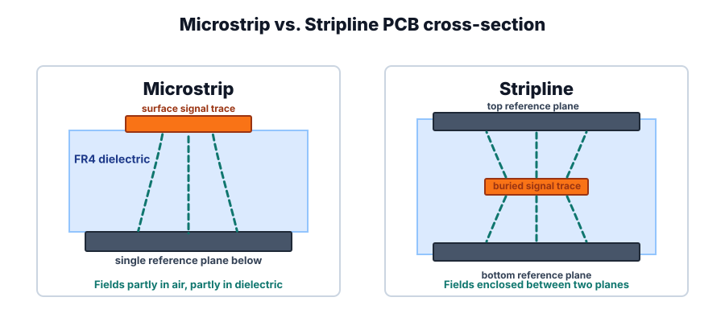

transmission-line-theory-pcb-what-is-the-physical-difference-between-a-microstrip-and / image_1
Microstrip vs. Stripline PCB cross-section pcb_microstrip_stripline

Prompt
A cross-sectional diagram of a PCB comparing both geometries. Left side (Microstrip): A copper trace on the top surface, FR4 dielectric below, and a solid ground plane at the bottom. Right side (Stripline): A solid ground plane on top, FR4 dielectric, an internal copper trace in the middle, more FR4, and a solid ground plane at the bottom.